Banking, debt, and currency crises in developed countries: Stylized facts and early warning indicators
Jan Babecky, Tomas Havranek, Jakub Mateju, Marek Rusnak, Katerina Smidkova, Borek Vasicek (2014), "Banking, debt, and currency crises in developed countries: Stylized facts and early warning indicators." Journal of Financial Stability 15: 1-17. https://doi.org/10.1016/j.jfs.2014.07.001.
Jan Babecký a,*, Tomáš Havránek a,b, Jakub Matějů a,c, Marek Rusnák a,b, Kateřina Šmídková a,b,1, Bořek Vašíček a
a Czech National Bank, Research Department, Na Prikope 28, 115 03 Prague 1, Czech Republic
b Charles University, Institute of Economic Studies, Prague 1, Opletalova 26, 110 00 Prague 1, Czech Republic
c CERGE-EI, Politickych veznu 7, 111 21 Prague 1, Czech Republic
Article history: Received 7 August 2013. Received in revised form 25 March 2014. Accepted 10 July 2014. Available online 19 July 2014.
JEL classification: C33, E44, E58, F47, G01
☆ This paper presents a substantially revised version of ECB Working Paper No. 1485. The main difference is that the identification of crises has been refined and is now based on a validation exercise performed by experts from national central banks of the EU-27 within the ESCB Macroprudential Research Network and by experts from national central banks, universities, and research institutes from non-EU countries. The previous version of the paper employed crisis identification using aggregation across numerous sources (country expert validation being only one of them). The original definition of crises was much broader and thus more subject to measurement errors.
* Corresponding author. Tel.: +420 2 2441 3234; fax: +420 2 2441 4278. E-mail addresses: Jan.Babecky@cnb.cz, jan.babecky@gmail.com (J. Babecký), Tomas.Havranek@cnb.cz (T. Havránek), Jakub.Mateju@cnb.cz (J. Matějů), Marek.Rusnak@cnb.cz (M. Rusnák), Borek.Vasicek@gmail.com (B. Vašíček).
Abstract
We construct and explore a new quarterly dataset covering crisis episodes in 40 developed countries over 1970–2010. First, we present stylized facts on banking, debt, and currency crises. Using panel vector autoregression we find that banking and debt crises are interrelated and both typically precede currency crises, but not vice versa. Banking crises are the most costly in terms of the overall output loss, and output takes about six years to recover. Second, on a reduced sample we try to identify early warning indicators of crises specific to developed economies, accounting for model uncertainty by means of Bayesian model averaging. The most consistent result across the various specifications and time horizons is that significant growth of domestic private credit precedes banking crises, while rising money market rates and global corporate spreads are also leading indicators worth monitoring. For currency crises, we also corroborate the role of rising domestic private credit and money market rates and detect the relevance of domestic currency overvaluation. The role of other indicators differs according to the type of crisis and the warning horizon selected, but it mostly seems easier to find reliable predictors at a horizon shorter than two years. Early warning indicators of debt crises are difficult to uncover due to the low occurrence of such episodes in our dataset. We also employ a signaling approach to derive the threshold value for the best single indicator (domestic private credit), and finally we provide a composite early warning index that further increases the usefulness of the model.
Keywords: Crises, Developed countries, Early warning indicators, Bayesian model averaging, Macro-prudential policies
1. Introduction
Although the literature on crises and early warning is extensive, the research on the occurrence and early warning indicators of economic crises in developed countries is still relatively thin. Nevertheless, recent experience has demonstrated the relevance of the topic for developed economies. Our paper presents stylized facts on crisis occurrence and establishes which early warning indicators are relevant for developed countries by utilizing a new quarterly data set and by employing an advanced technique to overcome model uncertainty.
The literature on crises has traditionally been focused on emerging markets (Frankel and Rose, 1996; Kaminsky et al., 1998; Kaminsky and Reinhart, 1999, among others). More recently, large samples of countries, including both developing and developed economies, have been explored (Rose and Spiegel, 2011; Frankel and Saravelos, 2012). While currency crises were the subject of investigation in the pioneering studies, the recent literature has tried to encompass more types of costly events, including various types of banking and debt crises (Laeven and Valencia, 2012; Levy-Yeyati and Panizza, 2011; Reinhart and Rogoff, 2011).
The literature has suggested that all types of crisis can be very costly and that there are possible causal relationships between various types of crises (Kaminsky and Reinhart, 1999; Reinhart and Rogoff, 2011). While output losses are induced by disruptions of the credit supply in the case of banking crises (Dell’Ariccia et al., 2008), the massive devaluations inherent to currency crises are detrimental to trade flows (Kaminsky and Reinhart, 1999). Debt crises in turn mostly increase the cost of sovereign borrowing (Borensztein and Panizza, 2009) and are usually followed by austerity measures, which usually have benign effects on the borrowing cost and an adverse impact on domestic demand.2
The literature has also proposed various early warning indicators, such as depletion of international reserves, real exchange rate misalignment or excessive domestic credit growth for currency crises in emerging markets (Frankel and Rose, 1996; Kaminsky et al., 1998; Bussiere, 2013a,b), rapid growth in domestic credit and monetary aggregates for both banking and currency crises (Kaminsky and Reinhart, 1999), a sharp increase in private indebtedness for banking crises (Reinhart and Rogoff, 2011), growth in global credit for costly asset price bubbles (Alessi and Detken, 2011), a large real GDP decline for debt crises (Levy-Yeyati and Panizza, 2011), the level of central bank reserves and real exchange rate appreciation for costly events such as the recent financial crisis (Frankel and Saravelos, 2012), and a combination of several indicators into composite indices for banking crises (Borio and Lowe, 2002). Alternatively, it has been proposed that each crisis is by its nature idiosyncratic and it is difficult to find reliable indicators to predict them (e.g. Berg and Pattillo, 1999). Recently, Rose and Spiegel (2011) have expressed skepticism about the possibility of explaining the cross-country incidence of the recent global financial crisis.
Our paper is focused on stylized facts and early warning indicators relevant for developed countries. We define developed economies as the EU and OECD countries, which allows us to assemble a crisis database for 40 countries.3 The empirical early warning model is based on a reduced, albeit more homogeneous sample, as we typically do not have enough data coverage for countries in the developing stage.4 The findings of the previously quoted literature may or may not be applicable to developed economies for various reasons. For example, the sources of stress and propagation of crises in emerging and developed economies may differ due to different levels of financial development and intermediation and to differences in the term structure of debt contracts (short- versus long-term) and their currency denomination (Mishkin, 1997). Therefore, stylized facts on crisis occurrence in developed economies should be compiled from a panel consisting of these economies only. Also, the lack of significant early warning indicators may be due to the large country heterogeneity of the previously analyzed samples.
Our main contributions to the literature are the following. First, we construct and make available a quarterly database of the occurrence of banking, debt, and currency crises (or, alternatively, balance of payment crises) for a panel of 40 countries currently regarded as developed, over 1970–2010. To code crisis episodes, we compile the data from various published studies, transform the data into quarterly frequency, and then validate the country-specific coding of crises with the help of country experts’ opinions, based on our survey. The data demonstrates that there is substantial variation in the definition of crises across the published studies. Importantly, one can observe greater discrepancy in the determination of crisis endpoints compared to crisis onsets. To cross-check and validate the timing of crisis periods, we conduct a comprehensive survey among country experts (mostly from central banks) from all countries in the sample. The final database of crisis occurrence is provided in the online appendix.5
Second, the new database allows us to examine stylized facts for developed economies, such as possible causal links between individual types of crises on the one hand, and between crisis occurrence and economic activity on the other hand.6 To address the simultaneity issue and interactions between crises and economic activity, we employ a panel vector autoregression (PVAR) model that is well suited to studying the dynamic dependencies among the variables when limited time coverage can be complemented by the cross-sectional dimension (Canova and Ciccarelli, 2009; Ciccarelli et al., 2010). To identify the effects of the different types of crises (discrete dummy variable) on economic activity (continuous variable) in the PVAR framework, we combine the dummy-variable approach applied in the literature investigating the effects of monetary policy (Romer and Romer, 1994) and fiscal shocks (Ramey and Shapiro, 1998; Ramey, 2011) with the common recursive VAR identification. Our results suggest that in developed economies, currency crises are typically preceded by banking and debt crises and not vice versa, while banking and debt crises are interrelated. In terms of the overall output loss, banking crises rank among the most costly, followed by debt crises. It takes about six years for output to recover after a typical banking crisis in a developed economy.
Third, this paper attempts to identify early warning indicators of banking, debt, and currency crises onsets specific to developed countries. We apply the Bayesian model averaging (BMA) technique (Madigan and Raftery, 1994; Raftery, 1995, 1996) in order to select the most useful early warning indicators among the set of all available variables. In particular, we test around 30 potential early warning indicators in two time windows: from 5 to 8 quarters, and from 9 to 12 quarters before crisis occurrence. BMA also has the advantage of minimizing the impact of the authors’ subjective judgment on the selection of early warning indicators. We find that the onsets of banking and currency crises in developed economies are typically preceded by booms in economic activity. Growth of domestic private credit, rising money market rates and rising global corporate spreads are common leading indicators of banking crises. For currency crises, we corroborate the role of rising domestic private credit and money market rates and detect the relevance of domestic currency overvaluation. Regarding debt crises, their low occurrence in the sample of developed countries makes it difficult to establish consistent early warning indicators. The relatively low proportion of crises (in particular, debt crises) is traded off for relative sample homogeneity.
Finally, we apply signaling analysis to evaluate the performance of early warning indicators of banking crises in terms of the trade-off between Type I (missed crises) and Type II (false alarms) errors (Kaminsky and Reinhart, 1999; Alessi and Detken, 2011, among others). While domestic private credit is the most robust single early warning indicator of banking crisis onsets in developed economies, we find that, indeed, a combination of several early warning indicators substantially improves the performance of the early warning mechanism. This finding offers another perspective on the previous proposals to work with combined indicators (Borio and Lowe, 2002).
The paper is organized as follows. Section 2 presents the new quarterly database of banking, debt, and currency crises in 40 EU and OECD economies over 1970–2010. Section 3 presents stylized facts based on the quarterly dataset, including the results of the PVAR analysis of the dynamic linkages between banking, debt, and currency crises and the costs of the different types of crisis. Section 4 examines the potential early warning indicators of banking and currency crises in the reduced, albeit more homogeneous, subsample. The performance of the early warning indicators of banking crises is evaluated in Section 5. The last section concludes.
2. New quarterly database of economic crises in developed economies
For the purposes of this study, we assemble a quarterly database of economic crises in EU and OECD countries over 1970:Q1–2010:Q4. For each country, three binary variables capture the timing of banking, debt, and currency crises. The corresponding crisis occurrence index takes value 1 when a crisis occurred (and value 0 when no crisis occurred). In the construction of the index we proceed as follows: in the first step, we collect information about crisis occurrence from ten influential papers listed below. We aggregate these influential papers into a binary index for each type of crisis and assign the value 1 when at least one of them indicates crisis occurrence (to take into account any indication of a potential crisis). We start with this broader definition of crisis occurrence since (i) not all the studies and existing databases have the same geographic and time span, which is often related to their publication date7 and (ii) the particular criteria for defining crises – either numerical or qualitative – may differ across the underlying studies. Therefore, imposing a stricter criterion (agreement of a higher number of sources) could bias the results for countries and time periods that have worse coverage.8 In many cases we have to transform annual data into quarterly data by assuming that a crisis identified for a particular year occurred in all quarters. Naturally, this approach can introduce some bias if the true crisis occurs, say, in the middle of the year.
The papers which we use for the construction of the database are the following (in alphabetical order): Caprio and Klingebiel (2003), Detragiache and Spilimbergo (2001), Kaminsky (2006), Kaminsky and Reinhart (1999), Laeven and Valencia (2008, 2010, 2012), Levy-Yeyati and Panizza (2011) and Reinhart and Rogoff (2008, 2011). These papers do not provide a universal definition of crisis for three reasons. First, while some studies (e.g. Kaminsky and Reinhart, 1999; Kaminsky, 2006) identify crisis episodes with the help of a certain variable and its threshold value, other studies (e.g. Caprio and Klingebiel, 2003; Laeven and Valencia, 2008) employ expert judgment or use systematic literature or media reviews (see Annex I.2 for details of alternative definitions). Second, there is considerable disagreement in many cases about when a particular crisis ended (it is easier in general to find information on the exact timing of the onset of a crisis) since the underlying indicators typically return to their ‘normal’ levels only gradually. Third, some studies do not cover all developed countries due to their specific focus and also due to various data limitations.
This lack of a universal definition led us to the idea of validating the coding of crisis episodes with the help of country experts, who cross-check and correct, if needed, the coding of crises based on their knowledge of the country-specific situation, rather than relying on a single specific definition of crisis given the limits of the various definitions. Given the task at hand, we also find this strategy more appropriate than trying to judge which of the existing approaches to identifying a crisis is better. Indeed, our overall impression is that when a single indicator is used to define a crisis across a wide sample of countries, country-specific events can be easily downplayed. While the qualitative definition based on expert judgment or media coverage is subjective per se, the objectivity of the quantitative approach is limited by data availability and quality. In this regard we felt that the knowledge and judgment of country experts would be a very valuable addition to our aggregation exercise.
Therefore, as a second step we validate the coding of crises with the help of a comprehensive survey among country experts, mostly from national central banks, but sometimes from universities or research institutes, in all countries in the sample. Specifically, we sent the aggregated file to the country experts for checking and correction, accompanied by the definitions used in previous papers (see Annex I.2) as a guideline. The country experts validated the crisis coding, in about one third of cases extending the crisis episodes and in two-thirds of cases shortening them.
The corrected coding of crises was then used as the main input in our analysis (the dependent variable). This allowed us to extend the time span until 2010, whereas only a few of the selected studies cover the recent period. Obtaining reliable quarterly identification of crises was an additional motive to run the survey, because most of the influential papers work with annual data (see Annex I.2).
Figs. 1 and 2 provide a basic description of our quarterly binary indices. The sample of 6560 quarters allows us to analyze 620 quarters of banking crises, 222 quarters of currency crises, and 42 quarters of debt crises. The number of developed countries in crisis peaked in the mid-1990s and during the recent crisis (Fig. 1). Mexico scores highest in terms of the number of quarters in which the experts identify a banking crisis (Fig. 2). The original number of crises before correction by the country experts (based on the criterion that at least one of the aforementioned papers indicated a crisis) was 904 quarters of banking crises, 264 quarters of currency crises, and 48 quarters of debt crises. Thus, overall, the country experts were inclined to downplay the number of all three types of crises, and in particular banking ones, as compared to the literature. However, a closer look at the raw data suggests that most of the additional crises (especially in the case of banking crises) identified across academic studies by the ‘at least one’ criterion were the result of a single source finding a crisis which was confirmed neither by the country experts nor by other academic studies.
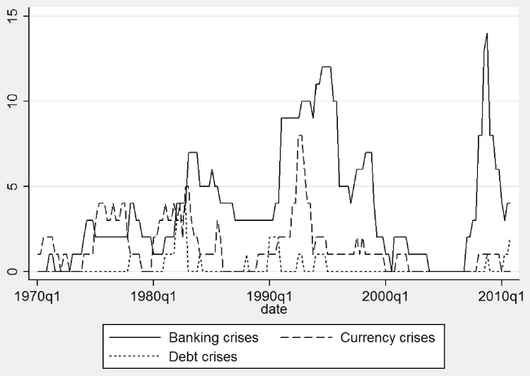
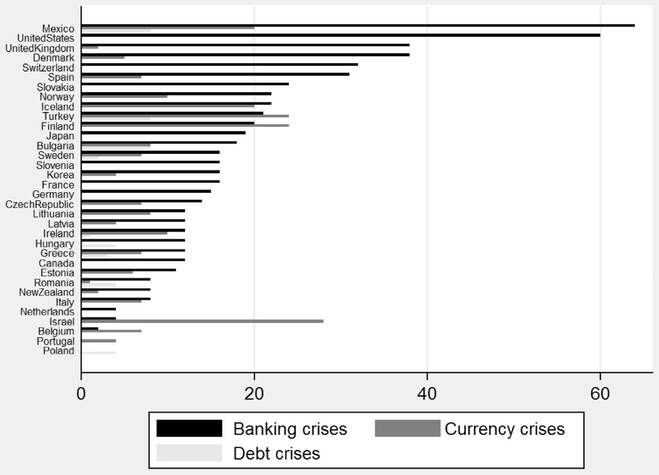
The overall results confirm the predominance of banking crises. They also suggest that having a large banking system raises the frequency of banking crises (the UK and the U.S.). This claim is consistent with Kaminsky and Reinhart (1999), who suggested that variables closely linked to the degree of financial intermediation (domestic credit to GDP) are among the best predictors of banking and currency turmoil. Nevertheless, the relation between financial development and financial fragility and economic growth seems to be more complex and the short-run effects may be different from the long-run ones (Loayza and Renciere, 2006).
Our database also indicates that it is more difficult to agree on banking and debt crisis definitions compared to the currency crisis definition in the case of developed economies. In the papers surveyed, banking crises are identified either according to a systemic loss of bank capital, or bank runs, or the size of public intervention in the banking sector. Country experts add additional perspectives. For example, periods of successful preemptive public intervention (no bank actually failed) should not be considered a banking crisis (e.g. in Australia 1989–1992). For the former emerging countries (Chile 1970s, Israel 1970s, Czech Republic 1990s), stress related to liberalization and structural changes in the banking sector should be carefully distinguished from the recent understanding of banking crises, while most previous papers commonly mix the two. The debt crisis definitions are also rather heterogeneous, ranging from sovereign debt default to debt restructuring to strong fiscal consolidation following significant political changes.
Although the general definition of a currency crisis (or a balance of payments crisis) is similar across the papers surveyed, it is worth noting that the numerical thresholds are not the same. All papers consider foreign exchange tension, which can manifest through large currency devaluation (depending on the exchange rate regime in place), a need for exchange rate interventions, or a substantial loss of foreign currency reserves (or, alternatively, a substantial increase in spreads between domestic and foreign currency denominated assets). However, the definition of large devaluation ranges from a 15% to a larger-than-30% exchange rate fall across the different studies. The ERM breakdown in 1992/1993 is another notable problem. While the studies we surveyed labeled it as a currency crisis in all EU countries, some EU country experts point out that this event did not have a country-specific idiosyncratic component and that the ERM collapse was a complex period, as several currencies in the mechanism de facto depreciated as some strong currencies (the German, Dutch, and Belgian ones) were simultaneously realigned upwards.
3. Banking, debt, and currency crises in developed countries: stylized facts
To provide some explanatory analysis of the interactions of banking, debt, and currency crises in developed economies and estimate their costs in terms of the real output gap, we use the panel vector autoregression (PVAR) model (Holtz-Eakin et al., 1988; Assenmacher-Wesche and Gerlach, 2010; Canova and Ciccarelli, 2009; Ciccarelli et al., 2010). The PVAR specification can be written as follows:
where stands for cross section and for time period, is a endogenous variable vector, and the cross-sectional heterogeneity is controlled for by including fixed effects .9 To obtain the structural impulse responses from the estimated reduced form equations, we employ Choleski decompositions (recursive identification). We first look at the interaction between the three types of crises. In the baseline case we used the following ordering: . In other words, a banking crisis is allowed to have a contemporaneous effect on debt and currency crises, but not vice versa. Similarly, a debt crisis can contemporaneously affect the occurrence of a currency crisis. Nevertheless, this assumption is not crucial, as the alternative five orderings (see below) did not qualitatively change the results. Indeed, the only (minor) difference can be detected for contemporaneous effects (i.e., in the impulse-response function in the first period), which were explicitly ruled out by the benchmark ordering. In particular, if we order currency crises before banking crises in line with the notion of ‘twin crises,’ suggesting that the relation between banking and currency crises can be bi-directional (Kaminsky and Reinhart, 1999), the corresponding IRFs do not change substantially.10
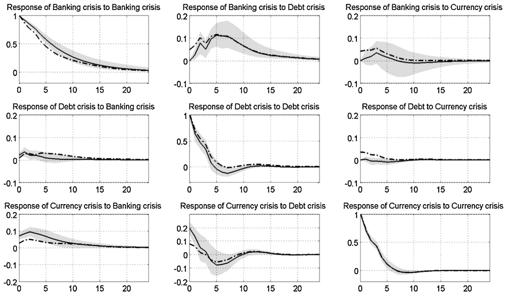
We include two lags of endogenous variables in the benchmark case (using more or less lags does not substantially change the results). Fig. 3 reports the impulse response functions from a VAR (with 6560 observations) including dummy variables for the relevant type of crisis.11 The responses are normalized, i.e., the value on the y-axis is interpreted as the probability of crisis occurrence within x quarters in the future after the occurrence of a crisis at present. Along with the impulse response functions from the baseline ordering and their confidence intervals, we report the mean response derived from the five alternative orderings (shown by dashed lines).
First of all, it is apparent that banking, debt, and currency crises in developed economies do not have the same degree of time persistence (see the diagonal graphs of Fig. 3). While banking crises are very persistent (Fig. 4: first row, first column), the likelihood of debt and currency crisis occurrence declines rapidly after the first onset of such crises. In particular, there is still a 50% probability that the banking crisis will last even six quarters after its onset. On the other hand, for debt and currency crises, the probability that these crises will last more than 2–3 quarters is less than 50%. This persistence of currency crises corroborates with the findings of Bussiere (2013a). Drawing on a dataset of currency crises in 27 countries over 1994–2003 at monthly frequency, he reports that currency crises had a tendency to happen again about six months after the first occurrence.
Logically, the persistence of crises turns out to be related to their duration in our sample countries. According to the descriptive statistics, the mean duration is 8.4 quarters for banking crises, 3.8 quarters for currency crises, and 2.5 quarters for debt crises.12 Such duration of banking crises lies broadly in the lower range of the estimates reported by previous studies for various sets of countries, including both developed and emerging economies: according to Frydl (1999) and the studies listed therein, the average length of a banking crisis was between 2.6 and 3.9 years (equivalently 10.4 and 15.6 quarters). Laeven and Valencia (2012) report that during 1970–2011 the average duration of banking crises was around three years for advanced economies, two years for emerging economies, and one year for developing economies.

Regarding debt crises, their relatively short duration for developed countries (less than one year) is somewhat in contrast to the patterns observed for larger sets of countries which include the emerging markets. For example, drawing on evidence from 70 countries, Reinhart and Rogoff (2011) show that debt crises were the most long-lasting, the median duration of default episodes being three years for the period 1946–2009 and even six years for 1800–1945.
In line with the previous literature, we also checked whether the onset of one type of crisis increases the probability of occurrence of another type of crisis. We do not find a significant response of banking crises to currency crisis occurrence in developed countries (Fig. 4: first row, third column). Mishkin (1997) points out important differences between developed and emerging economics in terms of the causes and propagation of crises. In particular, given that foreign currency lending is less common in developed countries, possible exchange rate turmoil will not be that detrimental to banking balance sheets. Moreover, many of the developed countries enjoy the privileged position of being issuers of reserve currencies.
On the other hand, our results suggest that banking crises often precede currency crises (Fig. 3: third row, first column), which is consistent with previous studies using large heterogeneous samples of countries or emerging countries (Kaminsky and Reinhart, 1999; Reinhart and Rogoff, 2011; Laeven and Valencia, 2012). The theory based on narratives of (mainly) emerging countries offers several explanations for this link. First, bank bail-outs may be financed by ‘printing money’ (Krugman, 1979; Velasco, 1987), thereby causing nominal devaluation of the domestic currency. Second, currency and maturity mismatches in banking sector balance sheets might provoke currency turmoil (Krugman, 1999). Third, a crisis in a banking sector and a related credit crunch may cause pessimistic (even self-fulfilling) expectations about future developments in the domestic economy and cause foreign investment to flow away. In the face of narrative evidence suggesting generally sound monetary policy and a lack of currency mismatches, we believe the last hypothesis to be the most plausible. Of course, there are some notable exceptions, such as Hungary, Mexico, and Korea, where currency mismatches have been severe. For example, the Tequila crisis of 1994 originated in Tesobonos, which were peso-dominated but indexed to dollars. Exceptions also apply to monetary policy conduct. For example, the inflation rate was above 20% in Italy during the 1970s and above 50% in Turkey for several decades.
The relationship between debt and banking crises in the sample economies turns out to be bi-directional (Fig. 3: the second row, first column shows a link from banking to debt crises, while the first row, second column indicates a reverse link). This confirms the interrelation between these two types of crises suggested by Blundell-Wignall and Slovik (2011) and the ‘mutual destabilization’ of sovereign and banking sectors emphasized by Mody and Sandri (2012) drawing on evidence from the recent European sovereign debt and banking crisis.13
The link from banking to debt crises may be explained by several factors. First, costly bank bail-outs shift credit risk from bank balance sheets to national fiscal accounts. Governments may even decide to offer explicit deposit insurance (e.g. Ireland in 2009) to prevent bank runs. Second, policy makers may want to introduce a fiscal stimulus to strengthen domestic demand. On the other hand, we also find evidence for the ‘reverse loop’ running from debt to banking crises (first row, second column). According to Borensztein and Panizza (2009), a sovereign debt crisis worsens the balance sheets of banks, particularly those holding government bonds, which, in turn, increases the probability of banking crisis occurrence.
It is not straightforward to put the bi-directional relationship between banking and debt crises in the context of causality. In our data sample of developed countries the occurrence of debt crises has been very limited compared to the occurrence of banking crises (see Fig. 1). Thus, there is a certain overlap between debt and banking crises, in the sense that banking crises are relatively so numerous that debt crises tend to be ‘enclosed’ by banking crises. Examination of the raw data on a country-by-country basis reveals that banking crises typically start before and end after debt crises.
In the case of developed economies, the link between debt and currency crises is the least evident one. We find no evidence that a currency crisis leads to a debt crisis in developed countries (Fig. 3: second row, third column). According to the previously quoted studies, currency turmoil could lead to a sovereign debt crisis if public debt is mostly denominated in foreign currency. However, this applies more to developing countries than to developed countries. On the contrary, a debt crisis may lead to a currency crisis in developed economies if currency depreciation is used as an adjustment tool after a default on debt obligations. Analogously, we find a significant and immediate reaction of a currency crisis to a debt crisis (Fig. 4: third row, second column). This finding is in line with the conclusions of theoretical models, dating back to Krugman (1979), that governments can use inflationary measures to solve their fiscal problems (besides using them for banking bailouts as noted above). In fact, there is a 10–20% probability that a currency crisis will appear after the onset of a debt crisis. This is the highest cross-crisis linkage in our sample.
All in all, our findings suggest that developed economies are not so different from emerging countries in terms of the interactions between the various types of crises. In both cases, empirical narratives show that banking and debt crises are interrelated and both can cause currency crises. The importance of banking crises is reinforced in our sample of developed economies, as they are substantially more frequent than the other kinds of crisis. We find no significant feedback from currency crises to banking crises in our data sample. This is probably related to the fact that the propagation mechanism is different (Mishkin, 1997). In particular, the advanced economies are less prone to the ‘original sin’ of borrowing in foreign currency, which makes them less subject to currency attacks (Eichengreen and Hausmann, 2005).
When analyzing the interactions between banking, debt, and currency crises, it is interesting to compare what the real costs of these types of crises are in terms of total output. We use the same methodology of panel VAR to assess the costs of the various types of crises. As the output loss measure, we use the year-on-year growth rate of real GDP (seasonally adjusted series from the OECD and national statistical offices). To test the different effects of different types of crises, we computed the impulse responses of the output loss (simple and cumulative) to each type of crisis occurrence in a bivariate panel VAR with the following ordering.
Our results from the panel VAR impulse responses (Fig. 4) show that all of the examined crises in developed economies lead to significant costs for the economy. The costs in terms of real output appear to be persistent mainly in the case of banking crises, as the related credit crunch and potential crisis of confidence may lead to pronounced deleveraging, and the recovery may take longer (Frydl, 1999). In addition, as noted above, both banking and debt crises increase the likelihood of a currency crisis.
The mean cumulative loss of a banking crisis in terms of GDP amounts to 6% after six years in our simulation. GDP growth does not recover fully even after this period.14 There is corresponding evidence in the literature that a banking crisis, or, more specifically, an unresolved banking crisis, led to Japan’s lost decade (Caballero et al., 2008). Laeven and Valencia (2012) argue that it is actually a ‘curse’ of advanced economies to rely too much on macroeconomic policies instead of applying proper financial restructuring.
In our sample, the GDP loss is more immediate but shorter-lasting in the case of currency crises, with a total cumulative loss of 3.5%.15 The costs are very short-lived and lower overall (insignificant from zero in cumulative terms) in the case of debt crises. For debt crises, there are very wide confidence intervals, which can again be attributed to the low occurrence of debt crises in the sample of developed economies.16
The costs of economic crises recently reignited a lively debate about early warning indicators (see Alessi and Detken, 2011; Bussiere and Fratzscher, 2006; Frankel and Saravelos, 2012; Rose and Spiegel, 2011, above all). In the following section, we apply a methodology dealing with model uncertainty to select the most useful early warning indicators for banking and currency crises. Due to the low occurrence of debt crises in our sample, we do not attempt to identify such indicators for this type of crisis.
4. Early warning indicators of banking and currency crises
Following the seminal work of Kaminsky and Reinhart (1999), several other studies tried to determine early warning indicators of different types of economic crises. The list of candidate variables is long. For example, Frankel and Saravelos (2012) consider over 50 variables, Rose and Spiegel (2011) over 60 variables, and Alessi and Detken (2011) 89 candidate series (in most cases the list includes various transformations of original series). Candidate variables have been tested either separately (Alessi and Detken, 2011) or jointly in an early warning model (Frankel and Saravelos, 2012; Rose and Spiegel, 2011). In the latter case, insignificant variables have remained part of the model.
Using the information from previous studies we narrowed the list of candidate early warning indicators down to 30 potential leading indicators with sufficient time and country coverage. These indicators include the main macroeconomic and financial variables and are described in Annex I.3.17 The selection methods, based, for example, on choosing only one transformation for each candidate variable, can be found in Babecký et al. (2013). We then proceeded to detect the most robust indicators of economic crises from the list of 28 potential ones.
Given the limits on data availability and reliability and the fact that some countries in the sample cannot be considered developed ones for the whole sample period, the panel used for this empirical analysis is unbalanced (see Annex I.1 for country-specific start dates). OECD membership often represents a necessary condition for data availability. Consequently, the data for transition countries in Europe and for Israel, Korea, and Turkey start only in the late 1990s. This way we exclude crises during the transition period, which could have been driven by market liberalization or structural changes and whose identification is often controversial. The data availability (four potential early warning indicators) limits the sample span for most countries to the 1980s onwards. Furthermore, Chile, Cyprus, Luxembourg, and Malta had to be excluded from the sample entirely. These data limitations, as well as the fact that we aim at crisis onsets (see below), whose identification across studies is less problematic than that of crisis occurrence, mean that debt crisis episodes are further reduced and cannot be used for the empirical analysis.18
There are at least two problems with running a simple regression (in this literature typically the multivariate logit model; see Demirgüç-Kunt and Detragiache, 2005, for a survey of approaches) in situations where there are many potential explanatory variables. First, putting all of the potential variables into one regression might inflate the standard errors if irrelevant variables are included. Second, using sequential testing to exclude unimportant variables might deliver misleading results since there is a chance of excluding the relevant variable each time the test is performed. A vast literature uses model averaging to address these issues, in economics notably in the domain of determinants of economic growth (Fernandez et al., 2001; Sala-i-Martin et al., 2004; Feldkircher and Zeugner, 2009; Moral-Benito, 2011). The only existing paper addressing model uncertainty in the domain of early warning indicators is Crespo-Cuaresma and Slacik (2009), who study currency crises in 27 developing countries using monthly data from 1994 to 2003.>
Bayesian model averaging (BMA) takes into account model uncertainty by considering the model combinations and weighting them according to their model fit. In particular, we employ BMA to detect the robust early warning indicators from the list of 30 potential ones. We consider the following linear regression model:
where is the dummy variable for crisis onset, is a constant, is a vector of coefficients, and is a white noise error term. denotes some subset of all available relevant explanatory variables, i.e., potential early warning indicators . The number of potential explanatory variables yields potential models. Subscript is used to refer to one specific model out of these models. The information from the models is then averaged using the posterior model probabilities that are implied by Bayes’ theorem:
where is the posterior model probability, which is proportional to the marginal likelihood of the model times the prior probability of the model .
The robustness of a variable in explaining the dependent variable can be expressed by the probability that a given variable is included in the regression. It is referred to as the posterior inclusion probability (PIP) and is computed as follows:
The PIP captures the extent to which we can assess how robustly a potential explanatory variable is associated with the dependent variable. Variables with a high PIP can be considered robust determinants of the dependent variable, while variables with a low PIP are deemed not robustly related to the dependent variable.
Typically it is not feasible to go through all of the models if the number of potential explanatory variables is large (in our case with 28 variables, the model space is almost ). We therefore employ the Markov Chain Monte Carlo Model Comparison (MC) method developed by Madigan and York (1995). The MC algorithm focuses on model regions with high posterior model probability and is thus able to approximate the exact posterior probability in an efficient manner.19 We use the priors recommended by Eicher et al. (2011) based on predictive performance: the unit information prior and the uniform model prior. The unit information prior gives the prior (each regression coefficient is centered at zero) the same weight as one observation of data, so the prior does not drive the posterior results. The uniform model prior gives each model the same prior probability. Both are relatively conservative priors that are commonly used in applications of Bayesian model averaging.
Our left-hand side variable is the onset of a banking/currency crisis. We are searching for early warning indicators that will issue a signal of possible crisis onset. While most previous studies using yearly data do not explicitly distinguish between crisis onset and crisis occurrence, we consider this distinction crucial: forces that make crises arise are different from those that keep crises going. Consequently, we transform the binary crisis occurrence indices into the crisis onset variable by retaining the value of 1 in the quarter when the crisis started.20 The narratives collected during the survey of country experts were of vital importance to determine correctly the onset of crises in our quarterly database, especially as some crises last longer and arguably even overlap. The disagreement about crisis onset across our sources was substantially lower than in the case of crisis occurrence.21 The information on crisis occurrence is consequently used in order to avoid potential crisis bias. Specifically, the evolution of variables can be substantially distorted during an ongoing crisis, and their observations cannot be used as reliable indicators of any future turmoil (Bussiere and Fratzscher, 2006). Therefore, the observations of potential indicators during crisis occurrence are discarded. Similarly, we discard the observations of four quarters before the crisis onset, as these can be distorted and represent crisis symptoms rather than early warning indicators (see also Behn et al., 2013).22
We use two different warning horizons for the BMA analysis: from 5 to 8 quarters, and from 9 to 12 quarters. That is to say, rather than looking at the exact lags of the potential early warning indicator, we look at a time interval (window), as suggested by Bussiere and Fratzscher (2006). In other words, rather than trying to predict the exact quarter in which the crisis occurred, we test whether a crisis occurs within 1 and 2 years or within 2 and 3 years after the realized value of each potential early warning indicator.
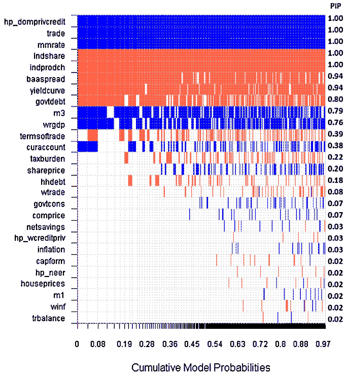
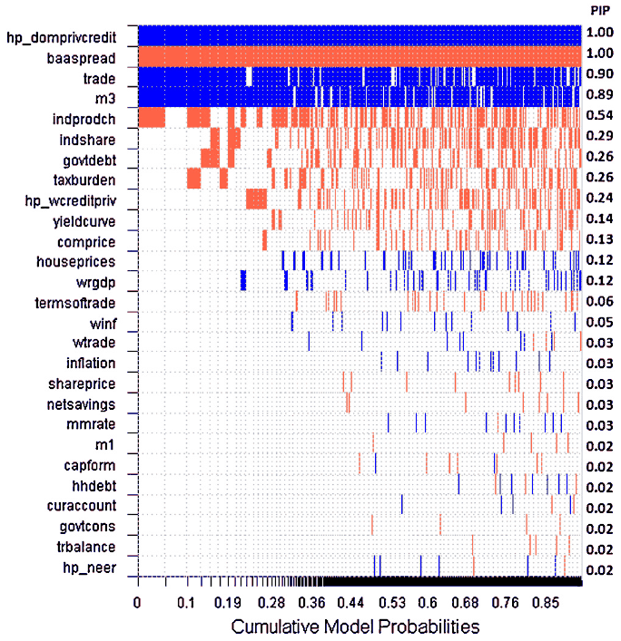
The results for the onset of banking crises are illustrated in Figs. 5 and 6.23 Each row represents a potential early warning indicator (see Annex I.3 for the full list) alongside its PIP on the right. The indicators are ordered in descending order according to this PIP, which can also be demonstrated by the color density of each row. Blue (red) color stands for a positive (negative) sign of the variable in the model. The models are represented by the columns and are ordered in descending order according to marginal likelihood (measured on the horizontal axis). In other words, the most likely models appear on the left and the variables belonging to those models are those on the top.
At the warning horizon of 5–8 quarters, the BMA identified seven variables with a PIP higher than 0.9. Specifically, the exercise shows that growth of domestic private credit,24 increasing money market rates, and also decreasing industrial production and yield curves are domestic factors commonly preceding banking crises. They are joined by some domestic structural characteristics, specifically the positive effect of trade openness and a low share of industry in GDP (i.e., a higher share of services). These are accompanied by a decreasing U.S. BAA spread, which is a global variable tracking decreasing risk premia for corporate loans and implying decreasing risk aversion. At a horizon of between 9 and 12 quarters, the BMA identified only three variables with a PIP of 0.9 or higher, and all of them were also identified at the shorter horizon. Specifically, we find that the important indicators are growth of domestic private credit, increasing trade openness, and a decreasing U.S. BAA spread.25 A PIP value slightly below 0.9 appears for M3 growth, which suggests the relevance of broad money as a money supply counterpart of domestic credit provided by the banking sector.
Therefore, it seems that the most useful indicators relate to investment optimism, leading to a boom (or bubble) and subsequent bust. Interestingly, but not entirely surprisingly, the risk build-up seems to be highest during times with the lowest market risk perceptions, proxied by a low risk premia. For a robustness check, we also perform the exercise for the whole period of crisis occurrence rather than crisis onset (at horizons of 8 and 12 quarters), recognizing that there may be some noise in tracking the exact timing of crisis occurrence. The results (available upon request) are consistent overall with those for crisis onset. Interestingly, the domestic private credit variable pops up across all these four specifications (for onset and occurrence, each at two different horizons) as a significant indicator with a mean PIP equal to 1. This is consistent with the previous evidence of Alessi and Detken (2011), Kaminsky and Reinhart (1999), Borio and Lowe (2002), and Demirgüç-Kunt and Detragiache (1998, 2005) pointing to a potentially detrimental role of excessive credit growth.
Indeed, Reinhart and Rogoff (2011) argue that banking crises are driven by private sector defaults, which are in turn driven by excessive private credit growth. Unlike these papers, our results indicate that banking crises occur during the expansion phase (increasing money market rates and M3) rather than as the economy is hit by recession (whereas domestic GDP does not enter the set of most significant crisis indicators with any sign, falling industrial production, which is identified at the shorter horizon by BMA, should be seen as a leading indicator of a forthcoming recession rather than a measure of its materialization). We do not find a significant role for some common suspects such as housing and share prices. In addition, we find one leading indicator of a global rather than local nature, specifically the U.S. corporate bond spread.
The results for the onset of currency crises are reported in Figs. 7 and 8. We can see that the set of leading indicators of currency crises has some similarities with that of banking crises. At a horizon of between 5 and 8 quarters, we find eight variables with a PIP higher than 0.9. Specifically, like for banking crises the main predictors of currency crises are growth of domestic private credit and M3 combined with an increasing money market rate. The additional indicators include a positive deviation of the nominal effective exchange rate from its trend value (domestic currency overvaluation) and an increasing slope of the domestic yield curve, increasing government debt, and increasing share prices. These developments are consistent with the hypothesis that currency crises, like banking crises, are preceded by economic expansions. The only variable pointing to the potential for a recession is negative capital formation. Increasing interest rates could also be a sign of preemptive monetary policy actions. In the face of expected currency turmoil the authority might substantially increase the domestic interest rate in order to defend the domestic currency.26 The role of domestic currency overvaluation based on our results is consistent with the original findings of Kaminsky et al. (1998) and Kaminsky and Reinhart (1999). Unlike them, we find no significant role for central bank reserves and domestic inflation.27 (Real) exchange rate appreciations were often deemed to predict currency crises, but the relation was found to be non-linear. For example, Goldfajn and Valdés (1998) show that a currency crisis is likely to occur when the real exchange rate appreciates by 25%, which is a value not achieved in our sample of countries.28
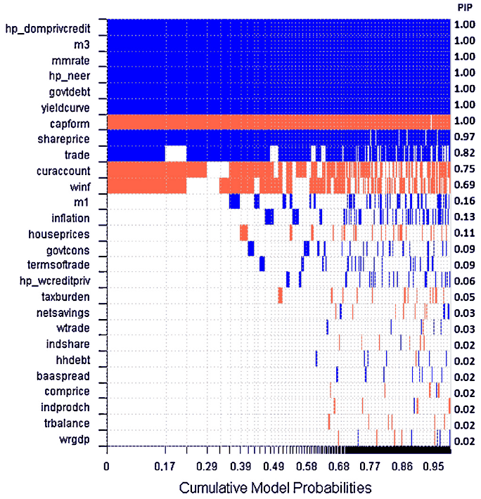
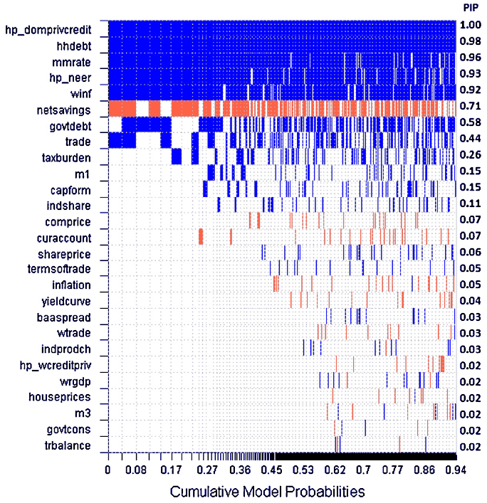
When looking at the horizon of between 9 and 12 quarters, we find five variables with a PIP above 0.9, and three of them were already detected for the shorter horizon. Specifically, BMA confirms the role of growth of domestic private credit, increasing money market rates, and positive deviation of the nominal effective exchange rate from its trend value. In addition, we find evidence for the role of increasing household debt and world inflation. As in the case of banking crises, these findings indicate that turmoil is immediately preceded by economic booms rather than recessions. On the other hand, the positive sign of the money market rate challenges the proposition of early models of currency crises (Krugman, 1979) that expansionary monetary (and fiscal) policy is responsible for a loss of international reserves and leads to a currency crisis.29 Assuming that money market rates reflect the monetary policy stance, we find the opposite. Indeed, at this longer horizon (two to three years) it is rather unlikely that the interest rate increase can reflect preemptive domestic monetary policy actions. As a robustness check we again used the alternative aggregating scheme, but the results were very similar overall (for all horizons).
We are aware of the limitations of applying OLS estimation for models with binary dependent variables. Nevertheless, alternative estimation methods such as logit or probit models have their own limitations when the distributional assumptions do not hold, for example in the presence of heteroscedasticity (which is the case of our data series). In Annex I.4, drawing on the example of early warning indicators of banking crisis onset (horizon between 5 and 8 quarters), we provide a robustness check using BMA for a limited dependent variable (see Fig. I.4.1) as well as panel regression results with a linear probability model and logit (see Table I.4.1). The results do not alter substantially and most variables that were identified above (according to the PIP) keep their sign and significance.
We can generalize all the previous findings in this section as follows: (i) BMA identified several variables as robust predictors of banking and currency crises in developed countries, (ii) the estimated signs of these indicators are mostly intuitive, (iii) it is generally easier to find statistically significant predictors at shorter horizons, but several variables provide consistent signals irrespective of the horizon, (iv) while most predictors are of an idiosyncratic nature, international factors are also important, and (v) the deviation of domestic private credit from its trend value emerges as a robust predictor for both banking and currency crises at both horizons.
To shed more light on the evolution of domestic credit around the time of crises, we depict its mean value alongside standard deviations in Fig. 9 for the case of banking crises. It is apparent that the mean credit to GDP ratio was well above its HP trend before the crisis onsets. The maximum deviation can be found around two years before the crisis onset, when the mean credit gap reaches a value of about 8%, and this gap normally closes only at the time of the crisis outburst, which is followed by negative values of the credit gap. The dashed lines show that the cross-country dispersion is especially high just before crises; the developments from around 2 quarters before crisis onsets are much more homogeneous across countries.
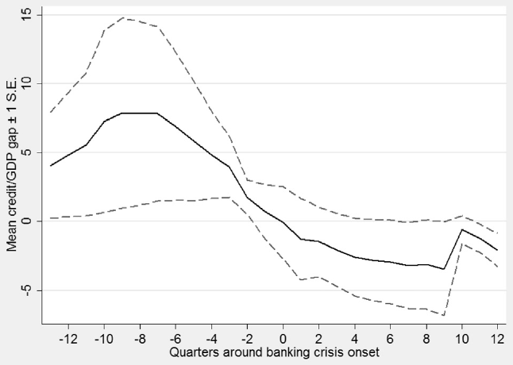
5. Signaling analysis
We have identified domestic private credit as the most robust indicator of crisis onset. To understand the practical usefulness of this single indicator vis-à-vis a linear combination of others, we resort to signaling analysis. We focus on the example of banking crises within 5–8 quarters. We follow the early warning literature and evaluate first the performance of this single indicator by minimizing policy makers’ loss function with respect to Type I errors (missed crises) and Type II errors (false alarms) (Kaminsky et al., 1998; Kaminsky and Reinhart, 1999; Alessi and Detken, 2011; among others), aiming at obtaining an intuitive threshold value of this indicator.
Along with Alessi and Detken (2011), we believe that a purely statistical criterion such as the noise-to-signal ratio may not be sufficient for the evaluation of early warning models from the policy maker’s view, since it does not take into account policy makers’ preferences as regards missed crises versus false alarms. In addition, we use a composite early warning index consisting of multiple variables (including all variables with PIP > 0.9 according to the BMA results), unlike Alessi and Detken (2011), who assessed the quality of each variable as an early warning indicator individually. As these variables are selected ex post, the evaluation exercise is not a true out-of-sample one. We try to mitigate the in-sample bias by weighting the variables equally when constructing the composite indicator, i.e., (at least) not using the optimal weights implied by the above analyses, which were conducted ex post with knowledge of the entire data sample.
The results of the signaling analysis can be summarized in a matrix in which actual crisis occurrence and the respective warning issuance are measured against each other. In the matrix, the numbers in parentheses are the counts of the respective events in the sample when domestic private credit is used as the early warning indicator at the horizon of 5–8 quarters ahead of the crisis onset, optimized for an equal preference weight between false alarms and missed crises (this corresponds to preference parameter = 0.5 in the policy makers’ loss function defined below).
| Crisis occurred | No crisis occurred | |
|---|---|---|
| Warning issued | A (79) | B (903) |
| No warning issued | C (29) | D (1513) |
The noise-to-signal ratio is defined as , capturing the ratio of the share of false alarms (noise) to the share of correctly predicted crises (signal). However, this measure does not include the share of missed crises: the Type I prediction error, which is defined as . Analogously, the Type II error (false alarms) is defined as . Alessi and Detken (2011) propose finding the threshold value of the early warning indicator which minimizes the policy makers' loss function in the form of
where is the parameter of the relative importance of Type I errors with respect to Type II errors. Realizing that the policy maker can always achieve a loss of by disregarding the early warning indicator (for > 0.5, the policy maker should always react while for < 0.5 he does not react at all), one can define the usefulness of the indicator as
If the usefulness is positive, there is a positive benefit of using the proposed early warning mechanism. For every value of the relative preference weight , we find the optimal trigger value of the early warning indicator by minimizing the loss function. If the indicator exceeds the trigger value, a signal is issued (and a policy response executed). When the policy maker has a relatively low preference for the loss from missed crises (low ), the optimal trigger value is high, as is the share of missed crises. Increasing the preference weight of missed crises, the optimal trigger falls and the initially low share of false alarms is traded off against the share of missed crises.
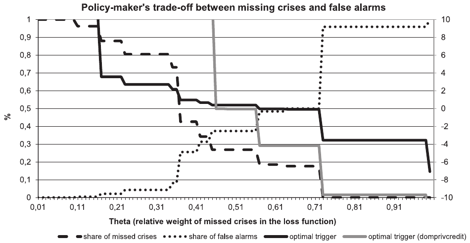
Fig. 10 shows the share of Type I errors (missed crises) versus Type II errors (false alarms) along with the optimal trigger values of the early warning indicators both for the domestic private credit gap and for the composite indicator. The composite indicator includes all the variables that, at the selected horizon, obtained a PIP above 0.9, therefore besides domestic private credit to GDP, also openness (trade as a percentage of GDP), the money market rate, the share of the industrial sector, growth of industrial production, the corporate bond spread (in the U.S. – a global variable), and the slope of the yield curve. Although the combination of different variables delivers better performance (in terms of usefulness as defined above), the use of the single variable of the gap of domestic private credit to GDP enables more intuitive interpretation and convenient policy application. In particular, assuming an equal preference weight between false alarms and missed crises ( = 0.5). Fig. 10 shows that the threshold value for domestic private credit to GDP (as a deviation from the HP trend) is close to 0 (see the light gray line, right-hand axis, for = 0.5). That is, even if the ratio of domestic private credit to GDP only exceeds its trend trajectory, policy makers should consider it a warning signal if their preference weights for missed crises and false alarms are equal. However, assessing in real time the position of domestic credit vis-à-vis its trend value remains rather challenging.
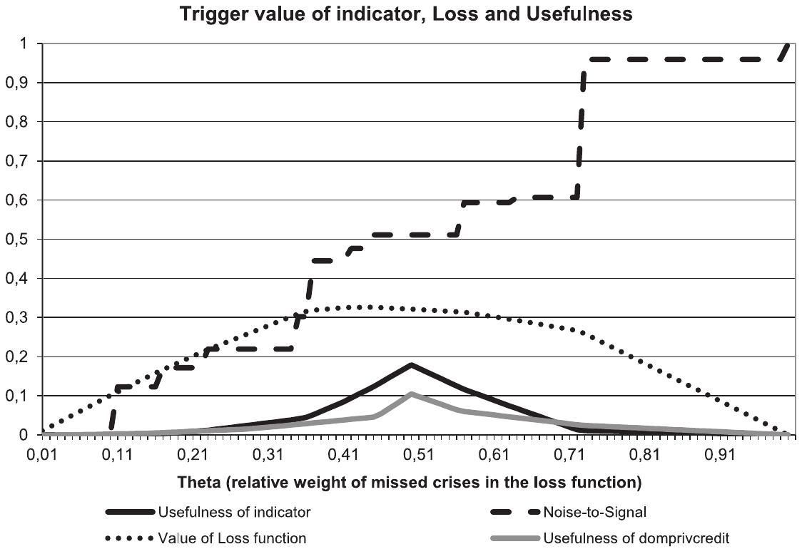
Finally, Fig. 11 shows the noise-to-signal ratio and the value of the loss function, along with the usefulness of both domestic private credit and the composite indicator. By construction, usefulness achieves its maximum when false alarms and missed crises are viewed as equally harmful ( = 0.5). The usefulness of the single indicator of domestic private credit is around 10%, while the composite indicator reaches a value close to 0.20, meaning that it is possible to avoid almost 20% of the loss arising from missed crises and false alarms by heeding the early warning indicator. The fact that domestic private credit is able to substitute half of the explanatory power of the composite early warning index (which includes six additional variables) underlines the importance of domestic private credit as the principal early warning indicator of crises for developed countries.30 This is supported by the recent empirical evidence that the financial cycle, which is formed by credit, equity prices, and property prices, may be associated with both systemic banking crises and economic downturns (Drehman et al., 2012). On the other hand, looking at the appropriate selection of additional indicators is still very useful.
6. Concluding remarks
Focusing on a sample of 40 developed countries, we compiled a quarterly database of the occurrence of banking, currency, and debt crises during 1970–2010 based on the stock of existing literature. Noting some disagreement among the studies on the exact timing of crisis episodes (particularly the end of crises), we complemented the crisis database with a survey among country experts (mainly from central banks) in all countries of our sample. The EU-27 survey was conducted with the help of the ESCB MaRs network, while experts from the remaining OECD countries outside the EU also kindly contributed to our database.
Employing a panel vector autoregression model, we found evidence that in developed economies, currency crises are often preceded by banking and debt crises, and the latter two show significant bi-directionality. Furthermore, banking crises appear to be persistent, meaning that even two years after the beginning of a banking crisis there is still an almost 50% probability of it continuing. In contrast, currency and debt crises are relatively short-lasting: the probability of a crisis lasting another quarter falls below 50% two to three quarters after the crisis onset.
According to our panel vector autoregression analysis, all three types of crisis examined have an adverse impact on the real economy. While all three types of crisis lead to a decline in output growth, banking crises are particularly costly, amounting to a mean total loss of about 6% of annual GDP, and there is not a full recovery even after 6 years. This is also related to the previous finding that banking crises may trigger other types of crises.
Next, we identified around 30 potential warning indicators of banking and currency crises. We applied Bayesian model averaging in order to tackle the model uncertainty problem, and we considered various warning horizons between one and three years. The most consistent result across the various specifications and time horizons is that rising domestic private credit precedes banking crises, while rising money market rates and global corporate spreads are also leading indicators worth monitoring. For currency crises, we also corroborate the role of rising domestic private credit and money market rates and detect the relevance of domestic currency overvaluation. The role of other indicators differs according to the type of crisis and the warning horizon selected, but it mostly seems easier to find reliable predictors at a horizon shorter than two years.
Finally, we performed a signaling analysis with the indicators retained by the Bayesian model averaging. We note that a combination of several early warning indicators delivers a better-performing early warning model compared to a single early warning predictor, namely, the ratio of domestic private credit to GDP (which turned out to be the most robust variable in Bayesian model averaging). The advantage of employing a single indicator in signaling analysis is the possibility of determining an intuitive threshold value. In particular, we find that if the ratio of domestic private credit to GDP just exceeds its trend trajectory, a policy maker who considers missed crises to be as costly as false alarms should take it as a warning signal that the risk of future banking turmoil has increased. This finding is consistent with the recent literature on financial cycles and puts the degree of credit growth at the center of the debate on macroprudential regulation. Nevertheless, reliable identification of deviations from the trend in real time is a significant challenge.
Although the early warning exercise is inherently backward-looking, the overall results suggest rather less skepticism about the possibility of finding some robust leading indicators of crises (e.g. compared to Rose and Spiegel, 2011). This may be related to the unique features of our exercise, namely, (i) the focus on a more homogeneous sample of countries, (ii) the use of both the cross-section and time dimension, (iii) the use of less aggregated frequency (quarterly as opposed to yearly) both for crisis timing and for early warning indicators, and (iv) a broader aggregation approach to the identification of crisis episodes (as opposed to reliance on a single crisis definition and a single database). We conclude, in line with Bussiere (2013b), by noting that although early warning models may seem too backward-looking (due to the apparent contradiction between the goals of predicting and avoiding crises), we believe that there is still large potential to learn from historical mistakes.
Acknowledgements
This work was supported by Czech National Bank Research Project No. C3/2011. Help from the European System of Central Banks (ESCB) Heads of Research Group and the Macroprudential Research (MaRs) Network is gratefully acknowledged. Tomáš Havránek, Jakub Matějů, and Marek Rusnák acknowledge support from the Czech Science Foundation (Grant #P402/12/G097). We thank Vladimir Borgy, Carsten Detken, Stijn Ferrari, Jan Frait, Michal Hlaváček, Roman Horváth, João Sousa, and an anonymous referee for their helpful comments. The paper benefited from discussion at seminars at the Banque de France, the Czech National Bank, and the Bank of Ireland, the workshop of the second workstream of the ESCB MaRs Network in March 2012, and the Second Conference of the ESCB MaRs Network in Frankfurt in October 2012. We thank Renata Zachová and Viktor Zeisel for their excellent research assistance. We are grateful to Inessa Love for sharing her code for the panel VAR estimation. We thank the Global Property Guide for providing data on house prices. The opinions expressed in this paper are ours and do not necessarily reflect the views of the Czech National Bank.
Annex I. Data
I.1. List of countries
| No. | Country | EU | OECD | Sample for EWS starting in |
|---|---|---|---|---|
| 1 | Australia | OECD | 1982 | |
| 2 | Austria | EU | OECD | 1996 |
| 3 | Belgium | EU | OECD | 1999 |
| 4 | Bulgaria | EU | 1998 | |
| 5 | Canada | OECD | 1980 | |
| 6 | Cyprus | EU | Not incl. | |
| 7 | Czech Republic | EU | OECD | 1998 |
| 8 | Denmark | EU | OECD | 1995 |
| 9 | Estonia | EU | OECD | 1998 |
| 10 | Finland | EU | OECD | 1996 |
| 11 | France | EU | OECD | 1983 |
| 12 | Germany | EU | OECD | 1993 |
| 13 | Greece | EU | OECD | 2000 |
| 14 | Hungary | EU | OECD | 1996 |
| 15 | Chile | OECD | Not incl. | |
| 16 | Iceland | OECD | 1998 | |
| 17 | Ireland | EU | OECD | 1998 |
| 18 | Israel | OECD | 1998 | |
| 19 | Italy | EU | OECD | 1991 |
| 20 | Japan | OECD | 1981 | |
| 21 | Korea | OECD | 1996 | |
| 22 | Latvia | EU | 2000 | |
| 23 | Lithuania | EU | 2000 | |
| 24 | Luxembourg | EU | OECD | Not incl. |
| 25 | Malta | EU | Not incl. | |
| 26 | Mexico | OECD | 1995 | |
| 27 | Netherlands | EU | OECD | 1994 |
| 28 | New Zealand | OECD | 1991 | |
| 29 | Norway | OECD | 1990 | |
| 30 | Poland | EU | OECD | 1998 |
| 31 | Portugal | EU | OECD | 1999 |
| 32 | Romania | EU | 2002 | |
| 33 | Slovakia | EU | OECD | 1998 |
| 34 | Slovenia | EU | OECD | 2002 |
| 35 | Spain | EU | OECD | 1993 |
| 36 | Sweden | EU | OECD | 1999 |
| 37 | Switzerland | OECD | 1990 | |
| 38 | Turkey | OECD | 2000 | |
| 39 | United Kingdom | EU | OECD | 1988 |
| 40 | United States | OECD | 1971 |
I.2. Sources and definition of crises
Banking crises
| No. | Source | Coverage and definition |
|---|---|---|
| 1. | Caprio and Klingebiel (2003) | The annual dataset (1970–2002) includes information on 117 episodes of systemic banking crises in 93 countries and on 51 episodes of borderline and non-systemic banking crises in 45 countries. A systemic crisis is defined as ‘much or all of bank capital was exhausted.’ Expert judgment was also employed ‘for countries lacking data on the size of the capital losses, but also for countries where official estimates understate the problem.’ |
| 2. | Kaminsky and Reinhart (1999) | The monthly dataset (1970–1995) includes 26 episodes of banking crisis in 20 countries. Banking crises are defined by two types of events: ‘(1) bank runs that lead to the closure, merging, or takeover by the public sector of one or more financial institutions; and (2) if there are no runs, the closure, merging, takeover, or large-scale government assistance of an important financial institution (or group of institutions) that marks the start of a string of similar outcomes for other financial institutions.’ The dataset of banking crises was compiled using existing studies of banking crises and the financial press. |
| 3. | Laeven and Valencia (2008, 2010, 2012) | The annual dataset (1970–2011) covers systemically important banking crises (147 episodes) in over 100 countries all over the world and provides information on crisis management strategies. A banking crisis is considered to be systemic if the following two conditions are met: ‘(1) Significant signs of financial distress in the banking system (as indicated by significant bank runs, losses in the banking system, and/or bank liquidations); and (2) Significant banking policy intervention measures in response to significant losses in the banking system.’ The first year that both criteria are met is considered to be the starting year of the banking crisis, and policy interventions in the banking sector are considered significant if at least three out of the following six measures were used: ‘(1) extensive liquidity support; (2) bank restructuring costs; (3) significant bank nationalizations; (4) significant guarantees put in place; (5) significant asset purchases; and (6) deposit freezes and bank holidays.’ The dataset is compiled using the authors’ calculations combined with some elements of judgment for borderline cases. |
| 4. | Reinhart and Rogoff (2008, 2011) | The annual dataset (1800–2010, from the year of independence) covers banking crises in 70 countries. The definition of banking crisis is the same as in Kaminsky and Reinhart (1999) (see above). The dataset of banking crises was compiled using existing studies of banking crises and the financial press. |
Currency (balance of payment) crises
| No. | Source | Definition and coverage |
|---|---|---|
| 1. | Kaminsky and Reinhart (1999) | The monthly dataset (1970–1995) includes 76 episodes of currency crisis in 20 countries. A currency crisis is defined excessive exchange rate volatility (‘turbulence’), that is, when the index representing a weighted average of changes in the exchange rate and reserves exceeds a certain threshold. ‘Crisis episodes’ are then defined as ‘the month of the crisis plus the 24 months preceding the crisis.’ For a robustness check, two alternative windows are used, starting at 12 and 18 months prior to the crisis. The dataset is compiled using the authors’ calculations. |
| 2. | Kaminsky (2006) | The monthly dataset (1970–2002) includes 96 episodes of currency crisis in 20 industrial and developing countries. The definition of currency crises and ‘crisis episodes’ is as in Kaminsky and Reinhart (1999). The dataset is compiled using the authors’ calculations. |
| 3. | Laeven and Valencia (2008, 2010, 2012) | The annual dataset (1970–2011) includes 218 currency crises identified in over 100 countries all over the world. A currency crisis is defined as ‘a nominal depreciation of the currency vis-à-vis the U.S. dollar of at least 30% that is also at least 10 percentage points higher than the rate of depreciation in the year before. . . For countries that meet the criteria for several continuous years, we use the first year of each 5-year window to identify the crisis.’ It should be noted that this list also includes large devaluations by countries that adopt fixed exchange rate regimes. |
| 4. | Reinhart and Rogoff (2011) | The annual dataset (1800–2010, from the year of independence) tracks currency crises (also called ‘crashes’) in 70 countries. A currency crisis is defined as an excessive exchange rate depreciation, that is, when the annual depreciation vis-à-vis USD or the relevant anchoring currency (GBP, FRF, DM, EUR) exceeds the threshold value of 15%. The dataset is compiled using the authors’ calculations. |
Debt crises
| No. | Source | Definition and coverage |
|---|---|---|
| 1. | Detragiache and Spilimbergo (2001) | The annual dataset (1971–1998) includes 54 episodes of debt crisis in 69 countries. A debt crisis is defined as a situation when ‘either or both of following conditions occur: (1) there are arrears of principal or interest on external obligations toward commercial creditors (banks or bondholders) of more than 5% of total commercial debt outstanding; (2) there is a rescheduling or debt restructuring agreement with commercial creditors as listed in Global Development Finance (World Bank). The 5% minimum threshold is to rule out cases in which the share of debt in default is negligible, while the second criterion is to include countries that are not technically in arrears because they reschedule or restructure their debt obligations before defaulting.’ |
| 2. | Laeven and Valencia (2008, 2010, 2012) | The annual dataset (1970–2011) includes 66 episodes of debt crisis in over 100 countries all over the world. Sovereign debt default and restructuring episodes are dated on the basis of various studies, including reports from the IMF, the World Bank and rating agencies. |
| 3. | Levy-Yeyati and Panizza (2011) | The annual dataset (1970–2005) includes 63 episodes of debt crisis in 39 countries. The dataset is compiled by the authors using Standard & Poor’s, the World Bank’s Global Development Finance database (analysis and statistical appendix), and press reports. |
| 4. | Reinhart and Rogoff (2011) | The annual dataset (1800–2010, from the year of independence) tracks episodes of both external and domestic debt crises in 70 countries. ‘External debt crises involve outright default on payment of debt obligations incurred under foreign legal jurisdiction, including nonpayment, repudiation, or the restructuring of debt into terms less favorable to the lender than in the original contract.’ A domestic debt crisis incorporates the definition of external debt crisis and, in addition, the freezing of bank deposits and/or forcible conversion of foreign currency deposits into local currency. |
I.3. Variables, transformations, and data sources
The variables in rows 1–30 (except housing prices and domestic credit to private sector) were downloaded from Datastream. The variables are listed in alphabetical order.
Dependent binary variables of crisis occurrence
| No. | Variable | Description | Transformation | Main source |
|---|---|---|---|---|
| (i) | Banking | Banking crises (1 if a crisis was reported, 0 otherwise) | None | Authors’ compilation from various sources |
| (ii) | Debt | Debt crises (1 if a crisis was reported, 0 otherwise) | None | Authors’ compilation from various sources |
| (iii) | Currency | Currency crises (1 if a crisis was reported, 0 otherwise) | None | Authors’ compilation from various sources |
Potential leading indicators
| No. | Variable | Description | Transformation | Main source |
|---|---|---|---|---|
| 1 | baaspread | BAA corporate bond spread | None | Reuters |
| 2 | capform | Gross total fixed capital formation (constant prices) | % yoy | Statistical offices, OECD |
| 3 | comprice | Commodity prices | % yoy | Commodity Research Bureau |
| 4 | curaccount | Current account (% of GDP) | None | OECD, WDI |
| 5 | hp_domprivcredit | Domestic credit to private sector (% of GDP) | Dev. from HP trend | BIS, WDI |
| 6 | govtcons | Government consumption (constant prices) | % yoy | OECD, statistical offices |
| 7 | govtdebt | Government debt (% of GDP) | None | WDI, ECB |
| 8 | hhcons | Private final consumption expenditure (constant prices) | % yoy | Statistical offices |
| 9 | hhdebt | Gross liabilities of personal sector | % yoy | National central banks, Oxford Economics |
| 10 | houseprices | House price index | % yoy | BIS, Eurostat, Global Property Guide |
| 11 | indprodch | Industrial production index | % yoy | Statistical offices |
| 12 | indshare | Industry share (% of GDP) | None | WDI, EIU |
| 13 | inflation | Consumer price index | % yoy | Statistical offices, national central banks |
| 14 | m1 | M1 | % yoy | National central banks |
| 15 | m3 | M3 | % yoy | National central banks |
| 16 | mmrate | Money market interest rate | None | IFS |
| 17 | neer | Nominal effective exchange rate | % yoy | IFS |
| 18 | netsavings | Net national savings (% of GNI) | None | WDI |
| 19 | shareprice | Stock market index | % yoy | Reuters, stock exchanges |
| 20 | taxburden | Total tax burden (% of GDP) | % yoy | OECD, statistical offices |
| 21 | termsoftrade | Terms of trade | None | Statistical offices |
| 22 | trade | Trade (% of GDP) | None | WDI |
| 23 | trbalance | Trade balance | 1st dif | Statistical offices, national central banks |
| 24 | wcreditpriv | Global domestic credit to private sector (% of GDP) | None | WDI |
| 25 | winf | Global inflation | None | IFS |
| 26 | wrgdp | Global GDP | % yoy | IFS |
| 27 | wtrade | Global trade (constant prices) | % yoy | IFS |
| 28 | yieldcurve | Long-term bond yield – money market interest rate | None | National central banks |
I.4. Robustness check with limited dependent variable models
See Fig. I.4.1 and Table I.4.1.
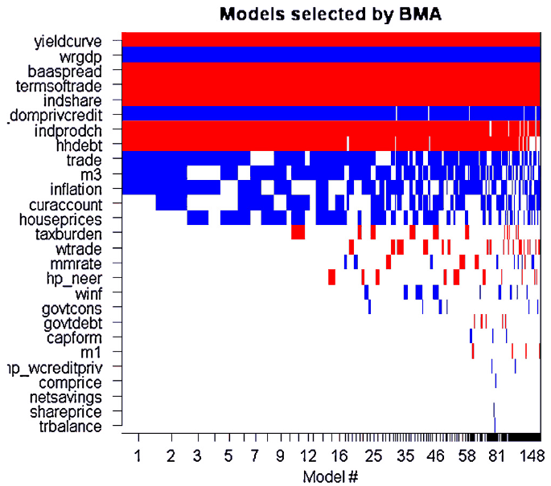
| (LPM, FE) banking_5_8q | (LOGIT, FE) banking_5_8q | (RELOGIT) banking_5_8q | |
|---|---|---|---|
| main | |||
| hp_domprivcredit | 0.00224*** (6.33) | 0.0492*** (3.77) | 0.0201*** (4.06) |
| trade | 0.00259*** (5.26) | 0.0632*** (4.89) | 0.00951*** (3.22) |
| mmrate | 0.00311*** (3.97) | 0.186*** (3.68) | 0.0230** (2.10) |
| indshare | −0.00242 (−1.63) | −0.143*** (−2.95) | −0.0722*** (−2.96) |
| indprodch | −0.00113 (−1.50) | −0.0383** (−2.06) | 0.00122 (0.11) |
| baaspread | −0.0297*** (−4.23) | −1.180*** (−4.70) | −0.617*** (−2.72) |
| yieldcurve | 0.00115 (0.89) | 0.0577* (1.73) | 0.00910 (0.54) |
| _cons | −0.0351 (−0.59) | −0.759 (−0.87) | |
| N | 2349 | 1481 | 2349 |
Note: (1) LPM, FE – linear probability model (panel fixed effects estimator), (2) LOGIT, FE – limited dependent variable model (panel logit fixed effects estimator), and (3) RELOGIT – limited dependent variable model for rare events (pooled logit), t-statistics in parentheses. * p < 0.10. ** p < 0.05. *** p < 0.01.
REFERENCES
- Alessi, L., Detken, C., 2011. Quasi real time early warning indicators for costly asset price boom/bust cycles: a role for global liquidity. Eur. J. Polit. Econ. 27 (3), 520–533.
- Assenmacher-Wesche, K., Gerlach, S., 2010. Monetary policy and financial imbalances: facts and fiction. Econ. Policy 25 (63), 437–482.
- Babecký, J., Havránek, T., Matějů, J., Rusnák, M., Šmídková, K., Vašíček, B., 2013. Leading indicators of crisis incidence: evidence from developed countries. J. Int. Money Financ. 35 (1), 1–19.
- Behn, M., Detken, C., Peltonen, T., Schudel, W., 2013. Setting up Countercyclical Capital Buffers Based on Early Warning Models: Would it Work? ECB Working Paper No. 1604.
- Berg, A., Pattillo, C., 1999. Are currency crises predictable? A test. IMF Staff Pap. 46 (2), 107–138.
- Bloom, N., 2009. The impact of uncertainty shocks. Econometrica 77 (3), 623–685.
- Blundell-Wignall, A., Slovik, P., 2011. A market perspective of the European sovereign debt and banking crisis. OECD J. Financ. Market Trends 2010 (2), 1–28.
- Bordo, M., Eichengreen, B., Klingebiel, D., Martinez-Peria, M.S., 2001. Is the crisis problem growing more severe? Econ. Policy 16 (32), 51–82.
- Borensztein, E., Panizza, U., 2009. The costs of sovereign defaults. IMF Staff Pap. 56 (4), 683–741.
- Borio, C., Lowe, P., 2002. Assessing the risk of banking crisis. BIS Quart. Rev., December, pp. 43–54.
- Borio, C., Drehmann, M., Gambacorta, L., Jimenez, G., Trucharte, C., 2010. Countercyclical Capital Buffers: Exploring Options. BIS Working Paper No. 317.
- Bussiere, M., 2013a. Balance of payment crises in emerging markets: how early were the ‘early’ warning signals? Appl. Econ. 459 (12), 1601–1623.
- Bussiere, M., 2013b. In Defense of Early Warning Signals. Banque de France Working Paper No. 420.
- Bussiere, M., Fratzscher, M., 2006. Towards a new early warning system of financial crises. J. Int. Money Finance 25 (6), 953–973.
- Caballero, R., Hoshi, T., Kashyap, A., 2008. Zombie lending and depressed restructuring in Japan. Am. Econ. Rev. 98, 1943–1977.
- Canova, F., Ciccarelli, M., 2009. Estimating multicountry VAR models. Int. Econ. Rev. 50 (3), 929–959.
- Caprio, G., Klingebiel, D., January 22, 2003. Episodes of Systemic and Borderline Financial Crises. World Bank http://go.worldbank.org/5DYGICS7B0
- Ciccarelli, M., Maddaloni, A., Peydro, J.-L., 2010. Trusting the Bankers: A New Look at the Credit Channel of Monetary Policy. ECB Working Paper No. 1228.
- Crespo-Cuaresma, J., Slacik, T., 2009. On the determinants of currency crises: the role of model uncertainty. J. Macroecon. 31, 621–632.
- Dell’Ariccia, G., Detragiache, E., Rajan, R., 2008. The real effect of banking crises. J. Financ. Intermed. 17, 89–112.
- Demirgüç-Kunt, A., Detragiache, E., 1998. The determinants of banking crises in developing and developed countries. IMF Staff Pap. 45 (1), 81–109.
- Demirgüç-Kunt, A., Detragiache, E., 2005. Cross-Country Empirical Studies of Systemic Bank Distress: A Survey. IMF Working Paper No. 05/96.
- Detragiache, E., Spilimbergo, A., 2001. Crises and Liquidity – Evidence and Interpretation. IMF Working Paper No. 01/02.
- Drehman, M., Borio, C., Tsatsaronis, K., 2012. Characterising the Financial Cycle: Don’t Lose Sign of the Medium Term! BIS Working Paper No. 380.
- Eichengreen, B., Hausmann, R. (Eds.), 2005. Other People’s Money: Debt Denomination and Financial Instability in Emerging Market Economies. University of Chicago Press, Chicago, IL.
- Eicher, T.S., Papageorgiou, C., Raftery, A.E., 2011. Default priors and predictive performance in Bayesian model averaging, with application to growth determinants. J. Appl. Econometr. 26 (1), 30–55.
- Feldkircher, M., Zeugner, S., 2009. Benchmark Priors Revisited: On Adaptive Shrinkage and the Supermodel Effect in Bayesian Model Averaging. IMF Working Paper No. 09/202.
- Fernandez, C., Ley, C., Steel, M.F.J., 2001. Model uncertainty in cross-country growth regressions. J. Appl. Econometr. 16 (5), 563–576.
- Fernandez-Villaverde, J., Guerron-Quintana, P., Rubio-Ramirez, J.F., Uribe, M., 2011. Risk matters: the real effects of volatility shocks. Am. Econ. Rev. 101 (6), 2530–2561.
- Fontaine, T., 2005. Currency Crises in Developed and Emerging Market Economies. IMF Working Paper No. 05/13.
- Frankel, J.A., Rose, A.K., 1996. Currency crashes in emerging markets: an empirical treatment. J. Int. Econ. 41 (3/4), 351–366.
- Frankel, J.A., Saravelos, G., 2012. Can leading indicators assess country vulnerability? Evidence from the 2008–09 global financial crisis. J. Int. Econ. 87 (2), 216–231.
- Frydl, E.J., 1999. The Length and Cost of Banking Crises. IMF Working Paper No. 99/30.
- Furceri, D., Zdzienicka, A., 2012. How costly are debt crises? J. Int. Money Finance 31 (4), 726–742.
- Goldfajn, I., Valdés, R., 1998. Are currency crises predictable? Eur. Econ. Rev. 42 (3–5), 873–885.
- Holtz-Eakin, D., Neset, W., Rosen, H.S., 1988. Estimating vector autoregressions with panel data. Econometrica 56 (6), 1371–1395.
- Hutchison, M.M., Noy, I., 2006. Sudden stops and the Mexican wave: currency crises, capital flow reversals and output loss in emerging markets. J. Dev. Econ. 79 (1), 225–248.
- Kaminsky, G.L., 2006. Currency crises: are they all the same? J. Int. Money Finance 25 (3), 503–527.
- Kaminsky, G.L., Lizondo, S., Reinhart, C.M., 1998. The leading indicators of currency crises. IMF Staff Pap. 45 (1), 1–48.
- Kaminsky, G.L., Reinhart, C.M., 1999. The twin crises: the causes of banking and balance-of-payments problems. Am. Econ. Rev. 89 (3), 473–500.
- Krugman, P., 1979. A model of balance-of-payments crises. J. Money Credit Bank. 11 (3), 311–325.
- Krugman, P., 1999. Balance sheets, the transfer problem, and financial crises. Int. Tax Public Finance 4, 459–472.
- Laeven, L., Valencia, F., 2008. Systemic Banking Crises: A New Database. IMF Working Paper No. 08/224.
- Laeven, L., Valencia, F., 2010. Resolution of Banking Crises: The Good, the Bad, and the Ugly. IMF Working Paper No. 10/146.
- Laeven, L., Valencia, F., 2012. Systemic Banking Crises Database: An Update. IMF Working Paper No. 12/163.
- Levy-Yeyati, E.L., Panizza, U., 2011. The elusive costs of sovereign defaults. J. Dev. Econ. 94 (1), 95–105.
- Loayza, N.D., Renciere, R., 2006. Financial development, financial fragility and growth. J. Money Credit Bank. 98 (4), 1051–1076.
- Madigan, D., Raftery, A.E., 1994. Model selection and accounting for model uncertainty in graphical models using Occam’s window. J. Am. Stat. Assoc. 89, 1535–1546.
- Madigan, D., York, J., 1995. Bayesian graphical models for discrete data. Int. Stat. Rev. 63 (2), 215–232.
- Mishkin, F.S., 1997. The causes and propagation of financial instability: lessons for policymakers. In: Presented at Maintaining Financial Stability in a Global Economy, A Symposium Sponsored by the Federal Reserve Bank of Kansas City, Jackson Hole, Wyo, August 28–30, pp. 55–96.
- Mody, A., Sandri, D., 2012. The Eurozone crisis: how banks and sovereigns came to be joined at the hip. Econ. Policy (April), 199–230.
- Moral-Benito, E., 2011. Model Averaging in Economics. Bank of Spain Working Paper No. 1123.
- Raftery, A.E., 1995. Bayesian model selection in social research. Sociol. Method 25, 111–163.
- Raftery, A.E., 1996. Approximate Bayes factors and accounting for model uncertainty in generalised linear models. Biometrika 83 (2), 251–266.
- Ramey, V.A., 2011. Can government purchases stimulate the economy? J. Econ. Lit. 49 (3), 673–685.
- Ramey, V.A., Shapiro, M.D., 1998. Costly capital reallocation and the effects of government spending. Carnegie-Rochester Conf. Ser. Public Policy 48 (1), 145–194.
- Reinhart, C.M., Rogoff, K.S., 2008. Banking Crises: An Equal Opportunity Menace. NBER Working Paper No. 14587.
- Reinhart, C.M., Rogoff, K.S., 2011. From financial crash to debt crisis. Am. Econ. Rev. 101 (5), 1676–1706.
- Romer, C.D., Romer, D.H., 1994. Monetary policy matters. J. Monet. Econ. 34 (1), 75–88.
- Rose, A.K., Spiegel, M.M., 2011. Cross-country causes and consequences of the 2008 crisis: an update. Eur. Econ. Rev. 55 (3), 309–324.
- Sala-i-Martin, X., Doppelhofer, G., Miller, R.I., 2004. Determinants of long-term growth: a Bayesian averaging of classical estimates (BACE) approach. Am. Econ. Rev. 94 (4), 813–835.
- Velasco, A., 1987. Financial crises and balance of payments crises: a simple model of the southern cone experience. J. Dev. Econ. 27 (1/2), 263–283.
ENDNOTES
- In memoriam.
- Furthermore, inherent to every crisis are negative effects stemming from an increase in the overall uncertainty (Bloom, 2009; Fernandez-Villaverde et al., 2011).
- There are alternative definitions of a ‘developed’ economy. For the sake of simplicity, we consider all EU and OECD members as of 2011 (see Annex I.1). It follows that some countries graduated from the emerging or transition category into the developed economy category between 1970 and 2010.
- EU and OECD membership and related changes in national data availability are useful to limit and homogenize the data sample. Indeed, the national data needed for the early warning exercise typically become available only after a country matures from its previous emerging status. This applies, for example, to the transition countries of central Europe in the late 1990s (see Annex I.1).
- The EU-27 survey was conducted within the ESCB MaRs network (in this case, all the country experts were from central banks). The remaining OECD member countries were contacted directly by us (in this case, the country experts were from central banks, international institutions, and universities). To download the database, visit Section A of the project page at http://ies.fsv.cuni.cz/en/node/372.
- The quarterly database is further explored in Babecký et al. (2013), in which the risk factors behind the effect of crises on the real economy are assessed.
- For example, Kaminsky and Reinhart (1999) were published more than a decade ago and covers only 20 countries.
- In the earlier versions of the paper, as a robustness check we used alternative aggregation criteria in which at least one and at least two of the selected sources – country experts being considered one of the alternative sources – claim that a crisis occurred. Although the overall crisis occurrence decreased substantially, in particular when the ‘at least two’ criterion was applied, the empirical results were qualitatively similar.
- We acknowledge the limitation of using a VAR model with dummy variables. Therefore, our results should be understood as a descriptive analysis rather than as robust empirical evidence.
- Kaminsky and Reinhart (1999) find not only that banking crises typically precede currency crises, but also that currency crises deepen banking crises. This points to the potential importance of contemporaneous effects of currency crises on banking crises.
- The nature of our exercise is different from the narrative approach of Romer and Romer (1994) who need to identify true exogenous policy shocks, i.e., events that are unexpected. On the contrary, our events (crisis occurrences) are well-defined episodes (subject to the quality of crisis identification) where one can rule out the possibility that the event was fully expected (and therefore does not represent a shock).
- The mean crisis duration is calculated as the ratio of the number of quarters of crisis occurrence to the number of quarters of crisis onsets. Crisis duration also corresponds to the frequency of crisis occurrence: the share of episodes of banking crises identified is 10.5% of all observations, while the figures for currency crises and debt crises are 3.8% and 0.7%, respectively.
- It should be noted that most of the debt crises occurred in cases where the countries could still have been characterized as emerging rather than developed economies. The most notable exceptions are Greece and Ireland in 2010.
- The cumulative effect is similar to Bordo et al. (2001), who report an average decrease in output of 6.2–7.0%, but lower than that in Laeven and Valencia (2012), who report an output loss of 26% for emerging countries and 33% for developed countries, and than that in Frydl (1999), who reports an average output loss of 13%.
- This is similar to Hutchison and Noy (2006), who report a cumulative output loss following a currency crisis of about 5.1%, and to Bordo et al. (2001), who report 3.8–5.9%.
- A short-lasting impact of a debt crisis on GDP is also found by Levy-Yeyati and Panizza (2011). Furceri and Zdzienicka (2012) find that debt crises are detrimental especially in the short term, with an estimated output loss of 5–10 percentage points. Borensztein and Panizza (2009) report that sovereign debt defaults reduce GDP growth by around 1.2 percentage points a year.
- Notice that our subsequent examination of the early warning indicators is not a real-time analysis due to publication lags of the data.
- Indeed, the only episodes of debt crisis onset in the reduced sample are Hungary (2008), Greece (2010), and Ireland (2010).
- We use the library BMS for R developed by Zeugner and available at http://bms.zeugner.eu/.
- In fact, this is equivalent to simulating a normalized one-unit shock to crisis occurrence as in Figs. 4 and 5. One appealing feature of aiming at onset rather than occurrence is that we do not need to account for persistence in crisis occurrence and include the lag(s) of the dependent variable among the regressors.
- The use of crisis onset is also useful in order to avoid some counterintuitive findings related to crisis occurrence variables such as the long duration of banking crises in the UK and the US.
- Babecký et al. (2013) make use of information on crisis occurrence from this dataset in another way. Specifically, they combine the crisis occurrence index with the crisis incidence index in terms of the real costs for the economy to identify risk factors that determine the costs of crises. Indeed, if the task is to understand the factors of the impact of crises on the real economy, it is necessary to explicitly take into account not only when they arise, but also how long they last.
- The complementary tables showing further estimation details such as post inclusion probabilities, post mean, post standard deviation, and conditional posterior sign index are reported in the online appendix.
- Specifically, we use the deviation of the ratio of domestic private credit to GDP from its trend value. For the detrending we use = 400,000 as suggested by Borio et al. (2010).
- In our previous version of the paper we used alternative identification schemes for crisis onset. Specifically, we assumed a crisis onset when at least one and at least two sources (including the country experts) indicated a crisis. The results of these exercises (available upon request) are useful as a robustness check. We find a similar number of variables with high PIPs, although the list of such variables differs slightly. Nevertheless, the main variables identified in this version, such as domestic private credit, trade, and the BAA spread, keep their significance.
- This strategy was used by Sweden in the run-up to the ERM crisis of 1992 when the short-term interest rate temporarily increased above 100%.
- Crespo-Cuaresma and Slacik (2009) use a similar BMA framework to detect early warning indicators of currency crises in emerging countries. They find that macroeconomic fundamentals are not robust indicators of currency crises in their dataset. Besides the real exchange rate, they find a significant role for financial variables, in particular financial contagion.
- The only episodes of annual appreciation of the domestic currency above 25% can be found for Canada and Sweden in 1979.
- Our results are at odds with Fontaine (2005), who finds a negative role for expansionary monetary policy in the run-up to a currency crisis. He finds this link to be relevant both for emerging economies and (albeit less so) for developed countries.
- Our results are not directly comparable with those of Alessi and Detken (2011), who report maximum usefulness values of around 0.20–0.25 for = 0.5. A few differences in our approach are noteworthy. Alessi and Detken (2011) predict asset booms, while we aim at early warnings of crisis onset at specific horizons. Moreover, our group of countries is broader than theirs.